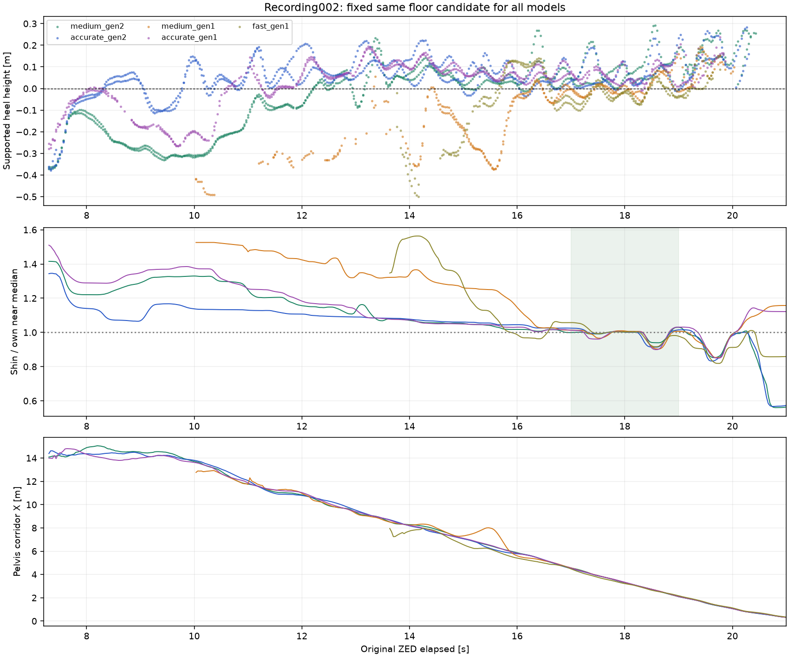
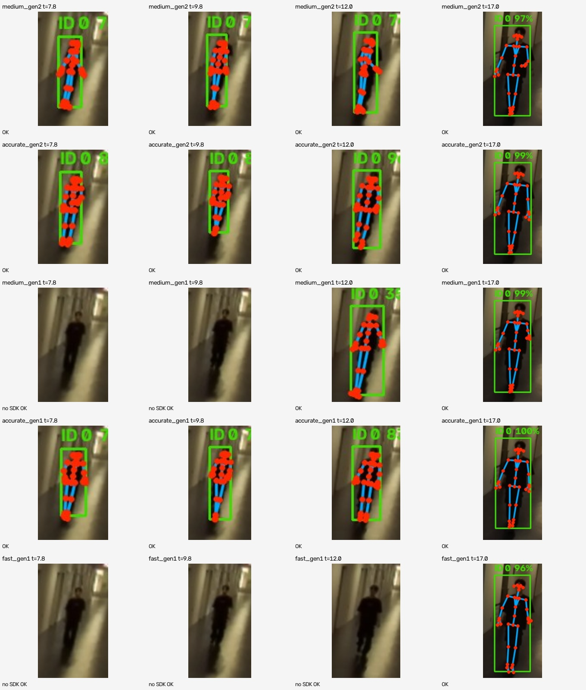
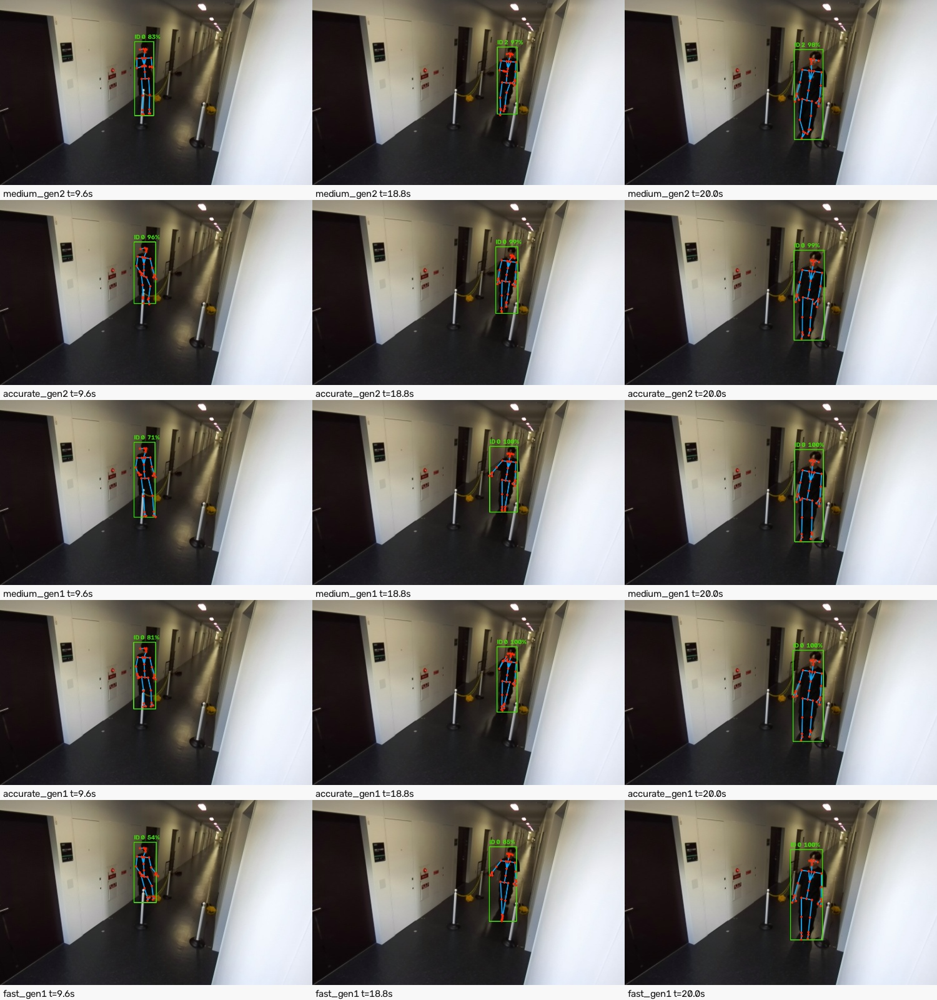

002：同じ接近414フレーム×5設定。003：全区間763フレーム×5設定と、接近249フレーム×5設定。SDKの有効世代・深度NEURAL・BODY_34・元画像時刻を照合しました。
MEDIUM / GEN_2も遠方の出力が続き、処理は軽い一方、002では足が床下へ入る傾向が大きく出ました。003の約9 m以内の接近で負荷を抑えるならMEDIUM / GEN_2も候補です。ACCURATE / GEN_2にも初期の高さ異常が残り、絶対関節精度を保証する判定ではありません。
| モデル | SDK OK | 両脚confidence≥25・画像内 | 相対骨長変動p90 | SDK処理ms中央値 |
|---|---|---|---|---|
| medium_gen2 | 411/414 | 385/414 | 32.2% | 56.4 |
| accurate_gen2 | 411/414 | 388/414 | 16.1% | 72.3 |
| medium_gen1 | 314/414 | 175/414 | 43.3% | 56.6 |
| accurate_gen1 | 411/414 | 307/414 | 34.9% | 72.9 |
| fast_gen1 | 222/414 | 137/414 | 38.7% | 47.3 |
| モデル | SDK OK | 両脚confidence≥25・画像内 | 相対骨長変動p90 | SDK処理ms中央値 |
|---|---|---|---|---|
| medium_gen2 | 245/249 | 191/249 | 23.6% | 55.6 |
| accurate_gen2 | 245/249 | 191/249 | 32.2% | 72.1 |
| medium_gen1 | 242/249 | 158/249 | 42.9% | 56.2 |
| accurate_gen1 | 243/249 | 173/249 | 85.3% | 69.7 |
| fast_gen1 | 228/249 | 123/249 | 35.0% | 42.7 |
原録画7.199〜10.5秒の100フレームでは、GEN_2の両モデルともSDK OK・両脚条件通過が97フレーム。ACCURATE/GEN_1の両脚条件通過は63、MEDIUM/GEN_1は1、FAST/GEN_1は0でした。
同じ63フレーム・両かかとconfidence≥25・画像内の比較で、推定床に対するかかと高の中央値はMEDIUM/GEN_2が−27.7 cm、ACCURATE/GEN_2が−3.7 cm、ACCURATE/GEN_1が−17.5 cm。ACCURATE/GEN_2にも初期最小約−37.7 cmがあり、全関節を正常と認める値ではありません。

今回のACCURATE/GEN_1の3D関節は過去の002の出力と数値上完全一致しました。新世代との比較でも校正・尺度・時計を調整していません。

SDK OKがあっても足の高さ・骨長が正しいとは限りません。MEDIUM/GEN_1とFAST/GEN_1では遠方にSDK OKの欠落があります。

代表場面では人物に骨格が対応しています。全区間のMEDIUM/GEN_2にはID 0→2の切替と3フレームの複数OK IDがあり、ACCURATE/GEN_2はID 0を維持しました。003のSDK骨格が出ても、LiDARの確定人物検出0/273という結果は変わりません。
元の自動比較の「主要ID」欄は最多IDだけを使うため、IDが変わる全区間MEDIUM/GEN_2をその欄だけで評価しないでください。画像の共通歩行窓8〜20.5秒・373フレームでは全IDの時刻の和集合で確認しています。詳細はREADMEを参照。
これらは単一人物の録画でのSDK出力・相対的な形状安定性・処理負荷の比較です。独立した位置・関節真値はありません。ポールの有無だけを変えた対照実験ではなく、床面や同期の精度も保証していません。